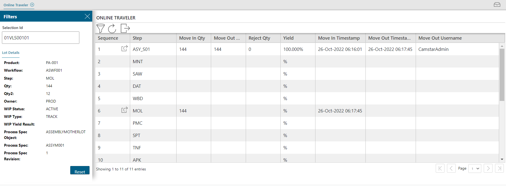

通过“在线游历器”页，可以查看指定批次的工作流程历史记录。首次浏览至该页时，在选择 ID 字段中输入批次名称。 应用程序将填充输入批次的工作流程历史记录。 通过单击在线游历器表格顶部的过滤器图标，可以折叠过滤器面板。
此外，还可以通过原始“WIP 主要”页和“WIP 主要高级”页访问“在线游历器”页。

此表定义“在线游历器”页中的字段。
|
字段 |
定义 |
类型 |
|---|---|---|
|
选择 Id |
批次的标识。输入批次名称或 ID。 该面板将显示“批次详细信息”信息。 |
仅显示 |
|
在线游历器表格 |
显示批次通过的每个工步及所有工步数据的表格。 |
仅显示 |
|
顺序 |
工作流程内工步的时间顺序。 |
仅显示 |
|
工步 |
工步名称。 |
仅显示 |
|
移入数量 |
批次移入工步时的晶片数量。 |
仅显示 |
|
移出数量 |
批次移出工步时的晶片数量。 |
仅显示 |
|
拒绝数量 |
在工步中拒绝的晶片数量。 |
仅显示 |
|
产量 |
批次的净数量减去所有拒绝数量，再加上所有增长晶片。 |
仅显示 |
|
移入时间戳 |
批次移入工步时由应用程序记录的时间戳。 |
仅显示 |
|
移出时间戳 |
批次移出工步时由应用程序记录的时间戳。 |
仅显示 |
|
移出用户名 |
将批次从工步移出的用户的用户名。 |
仅显示 |
此表定义“在线游历器”页中的按钮。
|
按钮 |
按钮功能 ... |
|
过滤器 |
打开并折叠左侧页面上的过滤器面板。 |
|
重新加载表格 |
刷新整个表格的内容。 |
|
导出数据 |
显示跳转至“WIP 主要高级”页的图标按钮。 |
|
请参见事务详细信息 |
显示批次的详细信息，包括之前的序列和事务详细信息。 |
按照以下步骤查看批次的在线游历器信息：
| 1. | 访问“在线游历器”页。 |
| 2. | 在选择 Id 字段中输入批次 Id。应用程序在屏幕的顶部区域和表格中的工作流程路径历史记录中显示当前工步信息。 |
| 3. | 如果要清除字段中的所有数据并查看其他批次的信息，单击重置。 |